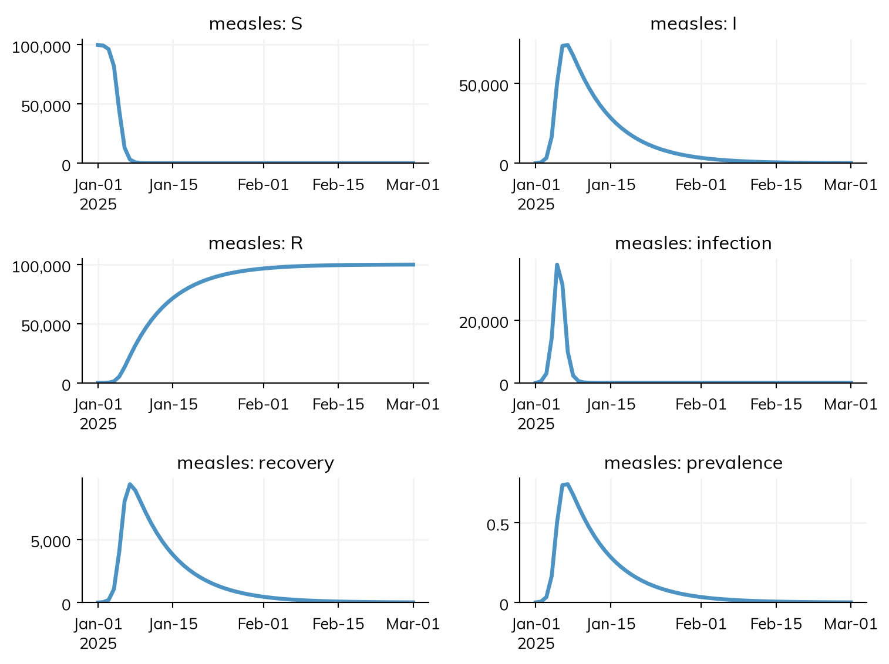
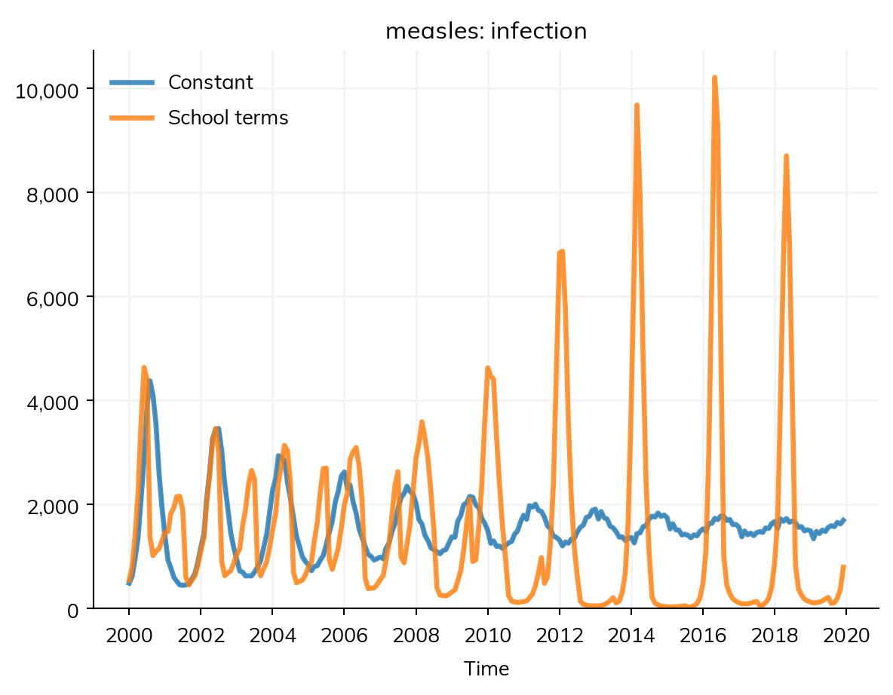

Every rate in a model is per some unit of time, every duration is in some unit, and a sim runs over a span of time in steps. Give rates and durations with their units (ss.perday(1.9), ss.days(8)), give the span as dates or durations, and Starsim converts between them. Starsim’s choices where reasonable conventions differ come first, below. Units, dates, and steps are introduced in T2 – Building a model.
On the philosophy of time
Starsim’s implementation of time is complex, because, well, time is complex. Some questions we’ve had to wrestle with:
If you run a simulation from 2000 to 2020, does it include 2020?
With monthly steps, would you expect the same average number of infections in 2004 (a leap year) as in 2005? What about February 2012 vs. March 2012?
Is a year 365 days, 365.25 days, or either 365 or 366 days depending on the year?
Usually years and dates are interchangeable: start=2000 is start='2000-01-01'. But what if someone simply wants to run for a number of years, start=0, stop=20, given that there is no year 0?
If an event is scheduled for year 2025.7, is that the nearest day (2025-09-14) or that exact moment (2025-09-13 12:00)? Will users ever want to worry about hours and minutes? What about microseconds?
Should units be strict (ss.days(5) != 5) or permissive (ss.days(5) == 5)?
If a death rate is “100 deaths per 1,000 people per year”, should 100 of 1,000 people die in a year, or 95 (since the dead stop accruing person-years)?
What does it mean to multiply a probability? Is ss.prob(0.1)*2 == ss.prob(0.2)? If so, what is ss.prob(0.5)*2, or ss.prob(0.9)*2?
Although time seems intuitive, there are many corners where intuition breaks down (and, worse, it might not seem like it has, leading you astray!). So, more than anywhere else in Starsim, check your assumptions about time. Here are our answers, though we recognize that other answers would also be valid:
The stop is included.start=2000, stop=2020 runs to 1 January 2020 (as np.linspace(0, 20) includes 20), so that a plot ends at 2020 and stop and dur are interchangeable. Since a step is taken from each time point, the last included, the row for 2020 is the state at the start of 2020 and the infections during 2020.
A month is exactly 1/12 of a year, so a monthly rate gives the same number of events in February as in March, and in 2004 as in 2005.
A year is 365 days (with some stretching where needed to make whole years and calendar dates line up).
Whether a sim has a calendar is decided once, from its start. A start that is a date ('2025-01-01') or a year (a number from 1800 on) gives it one; then every bare number given as a time (stop=2030, when=2030) is a calendar year. Any other start (0, or none in a model not in years) means no calendar: a bare time is in the sim’s unit from 0. A duration given as a time is that long after the start (when=ss.days(10)), which is how a reusable intervention says “5 years into the run”.
Dates are whole days, unless a smaller step is asked for explicitly (dt=ss.days(0.25)).
Units are loose when compared with plain numbers (ss.days(5) == 5 is true), and compared by value between units (ss.years(1) == ss.days(365) is true, and ss.years(1) == 1 is true too).
A rate is per person-time: of 1,000 people with a death rate of ss.peryear(0.1), about 95 die in a year (1,000 × (1 − exp(−0.1))), since the dead stop contributing person-years. If 100 is what the data means, it is a probability, ss.prob(0.1, 'year'). (Starsim 2 chose 100; by Starsim 3 we had decided that was wrong.)
A probability stays between 0 and 1: ss.prob(0.5)*2 is 0.75 (the chance of at least one of two events), which also means that ss.prob(0.1)*2 is 0.19, not 0.2.
More information about the philosophy of time is available here.
The time span, the step, and units
A sim runs from start to stop (or for dur), in steps of dt. The start and the stop are times, read the same way; dur is the length of the run instead of the stop. The span can be given in these ways:
Given as
Example
Time is
Dates
start='2025-01-01', stop='2025-07-01'
Calendar dates; results are dated
A date and a length
start='2025-01-01', dur=ss.days(180)
The same
Years
start=2025, stop=2030
Years, as numbers with dates behind them
A length
dur=ss.days(50)
Time from 0 (day 0, day 1, …)
Here is the measles model over the first two months of 2025:
import starsim as ssS, I, R = ss.states('S I R')infection = S >> I @ ss.perday(1.9)*I # β = 1.9 per dayrecovery = I >> R @ ss.days(8) # Infectious for 8 days on averagemeasles = ss.Disease(infection, recovery, init_prev=0.001)sim = ss.Sim(measles, total_pop=100_000, start='2025-01-01', stop='2025-03-01')sim.run()sim.plot('measles')
Sim: measles, 100,000 people, as an ODE, 2025-01-01 to 2025-03-01
measles: R0 = 15.2, with 100 infectious at the start
Done in 0.0039 s; measles: 99,900 infections; at most 74,112 infectious, on 2025-01-07

library(starsim)states("S I R")measles <-Disease(infection =Transition(S, I, rate = ss$perday(1.9) * I), # β = 1.9 per dayrecovery =Transition(I, R, dur =days(8)), # Infectious for 8 days on averageinit_prev =0.001)sim <-Sim(measles, total_pop =100000, start ="2025-01-01", stop ="2025-03-01")sim$run()sim$plot("measles")
The step, dt, is one unit of the model by default (here a day). Results are recorded at every time point, from the start to the stop inclusive, and a step is taken from each, the last included, so this run has 60 time points and 60 daily steps, the last of them 1 March. Each time point is a period: a stock, such as the number infectious, at a time point is the state at its start, and a flow, such as infections, the number during the step that starts there. The state after the last step is not recorded, so after a run sim.people is one step past the last time point.
Any two of the start, the stop, and the length define the third: start=2000, dur=20 (or dur=ss.years(20)) is the same as start=2000, stop=2020, and stop=2020, dur=20 starts in 2000. A run shorter than one step is an error. With no stop, the run is 50 of the sim’s unit (50 years for a model in years, 50 days for one in days), whatever the step. The final time point is the last one at or beforestop (see On the philosophy of time for why the stop is included).
Choosing the step
The ODE takes as many substeps as it needs, Gillespie and tau-leaping work in continuous time, and the chain binomial splits each step into substeps by default, so for these the step mostly sets how often results are recorded (and how often anything worked out once a step, such as a module written as code or a function of the sim, is updated). Agents, and the chain binomial with ss.solvers.binomial(substeps=1), take each step whole, so a step that is long compared with the time people spend in a state changes the results. sim.check_dt() measures this by running the sim again with half the step and comparing each result:
Change in each result when the timestep goes from 1 to 0.5 days (largest difference, as a fraction of the largest value):
measles.infection 60.8% (peak 29030 → 31540)
measles.recovery 56.1% (peak 8570 → 8830)
measles.prevalence 43.2% (peak 0.7704 → 0.769)
measles.I 43.2% (peak 77040 → 76900)
measles.infected 43.2% (peak 77040 → 76900)
measles.S 38.5% (peak 99900 → 99900)
measles.R 14.6% (peak 99820 → 99860)
For measles as agents, a day is too long a step (dt=ss.days(0.25) is closer to right); slower infections can take much longer steps. Twenty years of daily steps is 7,300 steps; Starsim warns when a sim has very many, since a longer step (dt=ss.weeks(1)) is often enough. See Solvers and backends.
A module can have a step of its own, such as yearly births in a model with weekly transmission (ss.Births(..., dt=ss.years(1))), and the modules are run in order of time.
Units
A typed value carries its own unit (ss.perday(1.9), ss.days(8)) and is converted to the sim’s step, so a model can mix units freely.
A bare number is also accepted. The slot says what it is (after @, it is a rate, not a duration: I >> R @ 8 is 8 per unit of time; for dur=, it is a duration), and the sim’s unit says its unit. This page is the reference for how that unit is chosen; other pages link here. It is the first of these that applies:
unit= given to the sim, e.g. unit='day'.
The typed values in the model’s diseases, declared or written as code (ss.days(8) makes it days). The rates of births and deaths declared in a disease (ss.birth(), ss.death()) don’t count, unless they are its only typed values.
start or stop given as dates: days.
A typed dt (dt=ss.weeks(1)), or else a typed start, stop, or dur (dur=ss.days(50)).
start or stop given as years: years.
The typed values of the networks, demographics, and interventions given to the sim, such as the yearly rates of ss.Births() or of ss.birth() given as demographics=. These never decide the unit when anything above does.
So in S >> I @ 1.9*I beside I >> R @ ss.days(8), the 1.9 is per day, and adding ss.birth(S, rate=ss.peryear(0.02)) to the disease, or ss.Births() to the sim, leaves it per day. The unit is never guessed from the size of a number, since 0.05 is plausible per day and per year. sim.describe() says where the unit came from, and the sim says so in a note when it came from anything other than the diseases’ typed values or dates.
When the typed values of rule 2 have different units (days in one disease, years in another, say):
if the diseases that have bare numbers all have their typed values in one and the same unit, that is the unit (e.g. a daily disease with a bare β, beside a yearly one with none);
otherwise, if there are any bare numbers, which unit they are in can’t be known, and the sim raises an error that asks for unit=;
with no bare numbers, nothing depends on the unit: it is the shortest, and the sim warns that it steps by one of it, unless dt= is given.
In a model that mixes daily disease dynamics with yearly demographics, type the disease’s rates (ss.perday(1.9)) or give unit='day', so that nothing depends on these rules.
Time in steps
If nothing has a unit, time is counted in steps: a rate is per step, a duration is in steps, and stop=50 is 50 steps. This is what a textbook model in discrete time means:
S, I, R = ss.states('S I R')textbook = ss.Disease(S >> I @1.9*I, ss.Transition(I, R, dur=8), init_prev=0.001)sim = ss.Sim(textbook, total_pop=100_000, stop=50)sim.run();
Sim: textbook, 100,000 people, as an ODE, steps 0 to 50
textbook: R0 = 15.2, with 100 infectious at the start
Done in 0.0014 s; textbook: 99,900 infections; at most 74,112 infectious, on step 6
Such a sim has no calendar, so dated data, dated interventions, and seasonal parameters (which are yearly cycles) are errors until it is given a unit (unit='day') or dates.
Rates, probabilities, and durations
Dates say when things happen, but disease modeling is mostly about durations and rates: how many days from infection to recovery? What is the chance of transmission per week? Starsim calls unit-aware quantities time parameters, and has four kinds, each with constructors for days, weeks, months, and years (a week is exactly 7 days, and a month exactly 1/12 of a year):
Kind
Means
Constructors
Duration
A length of time
ss.days(8), ss.weeks, ss.months, ss.years
Rate
A hazard: events per person per unit of time, happening continuously
An expected number of events per unit of time, such as sex acts per year
ss.freqperyear(80), or ss.freq(80, 'year')
Converting each to a step is Starsim’s job. Over a step of length Δt, a rate r becomes the probability 1 − exp(−r Δt) of at least one event, a probability p per period T becomes 1 − (1 − p)^(Δt/T), a frequency f becomes f Δt events, and a duration d is used through its rate 1/d. As the rate of a declared transition, a frequency is a hazard, the same as a rate of the same value. The ODE, Gillespie, and tau-leaping use the rates themselves, with no conversion.
Every class is listed in the API reference; a unit given as a string, wherever one is (unit='day', ss.prob(0.1, 'week'), .to('years'), resample('month')), is 'day', 'week', 'month', or 'year', in the singular or the plural. ss.prob(0.1, 'day') and ss.probperday(0.1) are the same, as are ss.freq(80, 'year') and ss.freqperyear(80). Each unit also has a one-unit instance, ss.day, ss.week, ss.month, and ss.year (e.g. ss.prob(0.1, ss.year)). Durations add with the left-hand unit taking precedence, and can be converted: ss.years(2) + ss.days(3) is years(2.00822), and ss.years(10).to('days') is days(3650).
The kinds differ in what multiplying by a duration means, which is how each is converted to a step:
A rate times a duration is a probability: ss.peryear(0.8) * ss.years(1) is 1 − exp(−0.8) ≈ 0.55, the chance of the event happening at least once in a year. A rate times a number is a scaled rate (ss.peryear(0.8) * 2 is 1.6 per year), which is how relative risks are applied. A rate need not be below 1: ss.perday(2) is valid.
A probability times a duration is the probability over that duration, worked out through the rate behind it: ss.prob(0.8, ss.years(1)) * ss.years(2) is 0.96, not 1.6 (which is not a probability).
A frequency times a duration is an expected number of events: ss.freqperyear(80) * ss.years(0.5) is 40, where ss.peryear(80) * ss.years(0.5) is the chance of at least one, almost 1 (for either, .to_events() is the number). Adding a frequency to a rate is an error, since they are converted differently.
The kinds combine where the result has a meaning:
print(ss.perday(0.1) * ss.days(3)) # The chance of at least one event in 3 daysprint(ss.prob(0.1, 'day') + ss.prob(0.1, 'day')) # Two competing risks of 0.1 a day: 0.19 a dayprint(1/ ss.days(10)) # A rate: 0.1 per dayprint(2/ ss.perday(0.1)) # A duration: 20 days
Where they don’t, such as adding a rate to a probability, it is an error that says why.
Which to use
A rate (ss.peryear(0.01)) for anything that happens to a person once, at some rate: infection, recovery, death. This is what most models use, and what an ODE means by a rate.
A duration (ss.days(8)) for the average time spent in a state; it is the same as the rate 1/duration, and usually easier to read.
A probability per period (ss.prob(0.01, 'year')) when the data is a fraction of people in a period: for example, 10 deaths in a year among 1,000 people.
A frequency (ss.freqperyear(80)) for a number of events that can each happen many times, such as contacts or acts.
ss.prob is a number, a time-aware value you can multiply and convert; ss.bernoulli is a distribution sampled for each agent (dist.filter(uids) gives the agents for whom the trial succeeded), which is what a module written as code uses to decide who is infected, dies, or is vaccinated. See Distributions.
A module written as code works with time a step at a time. Each time quantity in its parameters knows the module’s step after sim.init(), so:
rate.to_prob() is the probability of an event in one step;
dur.to_dt() is a duration as a number of steps, for comparing with the step numbers that states such as a time of infection hold;
freq.to_events() (or freq*dt) is the expected number of events in one step.
Convert a rate to a probability as the last step of a calculation, after multiplying it by any relative risks, so that the result is a valid probability:
death_rate = ss.peryear(0.1)rel_death_age =3.4# Older age, higher riskrel_death_ses =5.7# Lower socioeconomic status, higher risk# Right: multiply first, then convert to a probabilityp_death = (death_rate * rel_death_age * rel_death_ses).to_prob()# Wrong: gives an invalid probabilityp_death = death_rate.to_prob() * rel_death_age * rel_death_ses
States such as ti_infected or ti_recovered hold step numbers, not times, so a duration has to be converted to steps before it is added to one:
# Right: the duration as a number of steps (from the step after the infection, which is dated at the end of its step)self.ti_clearance[uids] =self.ti_infected[uids] +1+self.pars.dur_persist.to_dt()# Wrong: ss.years(100), ss.months(100), and ss.days(100) would all mean "100 steps"self.ti_clearance[uids] =self.ti_infected[uids] +1+self.pars.dur_persist
Declare such a state as an ss.TimeArr, and take the move when self.ti_clearance.due(), which rounds a time between steps up or down at random in proportion, so the duration keeps its mean, as a declared disease’s does (see ss.AgentDisease).
.to_dt() also takes a step, to convert to: ss.years(100).to_dt(ss.months(1)) is 1,200 monthly steps. A duration or rate is never silently a plain number: float(ss.peryear(0.1)) is an error, since ss.peryear(1) and ss.perday(1) would both give 1. Use .to_dt(), .to_prob(), .to('year') (or .years), or .value (the number in its own unit). Durations also work on arrays: ss.years(sim.people.age[uids]).days gives ages in days. Values drawn from a distribution of durations (self.pars.dur_inf.rvs(uids)) are already in steps. See Custom modules.
Dates and the timeline
ss.date is a calendar date, based on pd.Timestamp, and can be made from many things:
import datetime as dtimport pandas as pdd1 = ss.date(2025)d2 = ss.date(2025, 1, 1)d3 = ss.date('2025-01-01')d4 = ss.date(pd.Timestamp('2025-01-01'))d5 = ss.date(dt.datetime(2025, 1, 1))print(d1 == d2 == d3 == d4 == d5)d = ss.date('2025-01-01')print(d.years) # As a yearprint(d + ss.days(10)) # Ten days later
True
2025.0
2025-01-11
Dates are interchangeable with years as numbers (float(d) is the same as d.years, and ss.date(2025.5) is the middle of 2025), although some rounding can occur. A whole number of months or years added to a date follows the calendar, which is what “six months later” usually means; any other duration counts time exactly, with a year as 365 days and a month as 1/12 of a year:
print(d + ss.months(6)) # Six calendar months laterprint(d + ss.years(0.5)) # Half of 365 days laterprint(ss.date('2025-07-01') - d) # The time between two dates, in days
2025-07-01
2025-07-02
days(181)
Six months later is 1 July, but half a year later is 2 July, since 2025.5 is closer to 2 July: a month is 1/12 of a year, and 6/12 is certainly 0.5, but calendars don’t care. Likewise dt=ss.months(1) steps a dated sim by calendar months. A sequence of dates is made with ss.date.arange(start='2025-07-01', stop='2025-09-18', step='week'). ss.years(2000) is not ss.date(2000): the first is a duration of 2,000 years of 365 days with no calendar, the second is 1 January 2000.
sim.t (an ss.Timeline) holds the sim’s time points as datevec (dates), yearvec (years as numbers), relvec (time since the start, in the unit of the step), and tivec (step numbers); timevec, which results use, is dates for a dated sim and time since the start otherwise:
sim = ss.Sim(measles, total_pop=100_000, start='2025-01-01', stop='2025-03-01', dt=ss.weeks(1), verbose=0).init()print(sim.t.datevec[:4])print(sim.t.yearvec[:4])print(sim.t.relvec[:4]) # Weeks since the start
Any value in a model (a rate, a fraction, a starting value, an intervention’s coverage) can change over time, in one of three ways.
A time series, ss.timeseries(), gives the value at some times, and holds each until the next (interpolation='step', the default), interpolates between them ('linear'), or changes in an S-shaped curve ('cosine'). With period=, it repeats. Here, in the endemic measles model of Diseases, β is higher during school terms than in the summer holiday:
defmake_measles(beta): S, I, R = ss.states('S I R')return ss.Disease(infection= S >> I @ beta*I,recovery= I >> R @ ss.days(8),births= ss.birth(S, rate=ss.peryear(0.02)),deaths= ss.death(rate=ss.peryear(0.02)),init=dict(S=0.07, I=0.0001),name='measles', )terms = ss.timeseries({'2000-01-01': ss.perday(1.97), # School term'2000-07-20': ss.perday(1.37), # Summer holiday'2000-09-01': ss.perday(1.97), # School term}, period=ss.years(1)) # The same every yearscenarios = {'Constant': ss.perday(1.9), 'School terms': terms}sims = {}for label, beta in scenarios.items(): sims[label] = ss.Sim(make_measles(beta), total_pop=1_000_000, start='2000-01-01', stop='2020-01-01', dt=ss.days(1), verbose=0)msim = ss.parallel(sims)msim.results.measles.infection.resample('month').plot()

make_measles <-function(beta) {states("S I R")Disease(infection =Transition(S, I, rate = beta * I),recovery =Transition(I, R, dur =days(8)),births = ss$birth(S, rate = ss$peryear(0.02)),deaths = ss$death(rate = ss$peryear(0.02)),init =list(S =0.07, I =0.0001),name ="measles" )}terms <- ss$timeseries(list("2000-01-01"= ss$perday(1.97), # School term"2000-07-20"= ss$perday(1.37), # Summer holiday"2000-09-01"= ss$perday(1.97) # School term), period =years(1)) # The same every yearscenarios <-list("Constant"= ss$perday(1.9), "School terms"= terms)sims <-lapply(scenarios, function(beta) {Sim(make_measles(beta), total_pop =1000000, start ="2000-01-01", stop ="2020-01-01", dt =days(1), verbose =0)})msim <-parallel(sims)msim$results$measles$infection$resample("month")$plot()
A seasonal cycle, ss.seasonal(), is a smooth yearly cycle, mean × (1 + amplitude × cos(2π(t − peak))): ss.seasonal(mean=ss.perday(1.9), amplitude=0.2, peak='March') is highest in March, at 1.2 times the mean, and lowest in September. A cycle of another length takes period=. The “Explicit” tab writes the same cycle as a function of the sim:
import numpy as npdefseasonal_fn(sim):""" 1.9 per day, ±10% over the year, highest in mid-January """ year = sim.now.years + sim.t.dt_year/2# The middle of this step, as a year with decimals peak =0.5/12# The middle of January, as a fraction of the yearreturn ss.perday(1.9*(1+0.1*np.cos(2*np.pi*(year - peak))))scenarios = {'Constant': ss.perday(1.9), 'Seasonal (±10%)': seasonal_fn}sims = {label: ss.Sim(make_measles(beta), total_pop=1_000_000, start='2000-01-01', stop='2020-01-01', dt=ss.days(1), verbose=0) for label, beta in scenarios.items()}msim = ss.parallel(sims)msim.results.measles.infection.resample('year').plot()
A function of the sim, as in the “Explicit” tab, is worked out at each step and can use anything the sim knows: the date, the number of people in a state, or a result. It returns a typed value (ss.perday(...)), so that its unit is known. A time series or a seasonal cycle is better where it will do: the run can then be taken in one call to compiled code rather than a step at a time, describe() can print it, and it is kept when the model is saved.